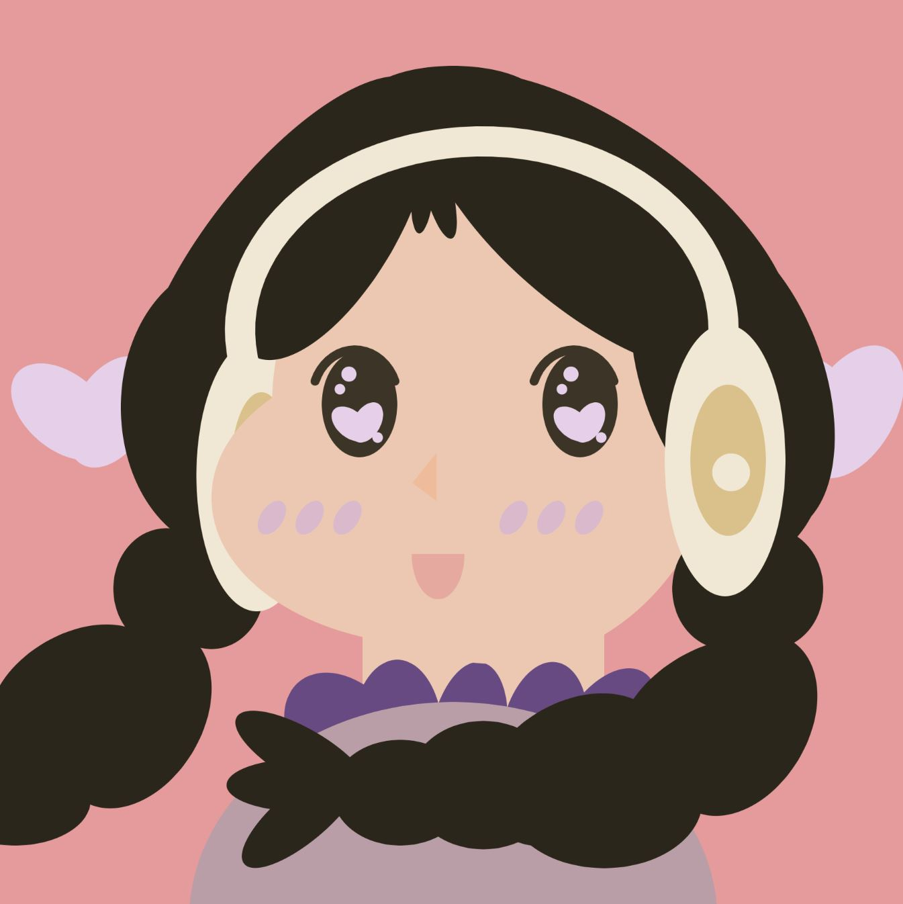
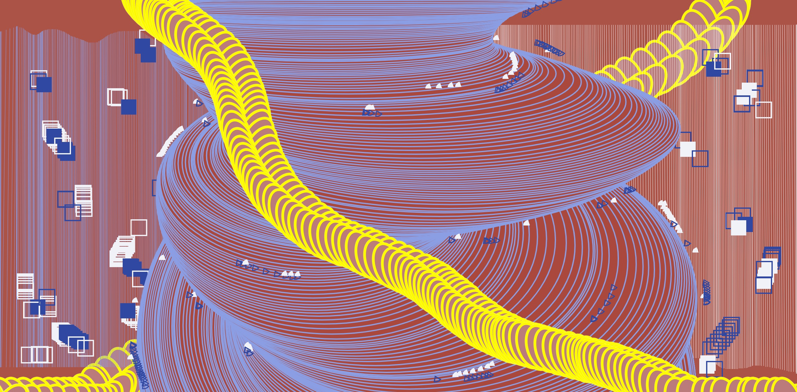

P5.js Works
Purple Happy self-Portrait

Purple Happy is my self-portrait created in P5.js.
I named it "Purple Happy" because the first letter of my Chinese first name means "purple",
and the second letter means “happy”.
The three key elements of my self-portrait:
purple, music and love,
are the three most important elements of my current life.
DIY Photoshop

For this DIYPS project,
I created a tool with simple shapes (line, square, ellipse, etc.),
but contrast colors (red, yellow, white, blue) that can be
easily used to create images that have strong visual effect.
Direction
Try to press numbers from 0 - 9 to switch to different tools.
0 - red ellipse with blue stroke
1 - pink heart with yellow stroke
2 - white vertical line from the top
3 - blue vertical line from the bottom
4 - square with white stroke and no fil
5 - blue square
6 - square with blue stroke and no fill
7 - white square
8 - white triangle
9 - blue triangle
x/X - clean canvas
p/P - save the canvas as a jpg file